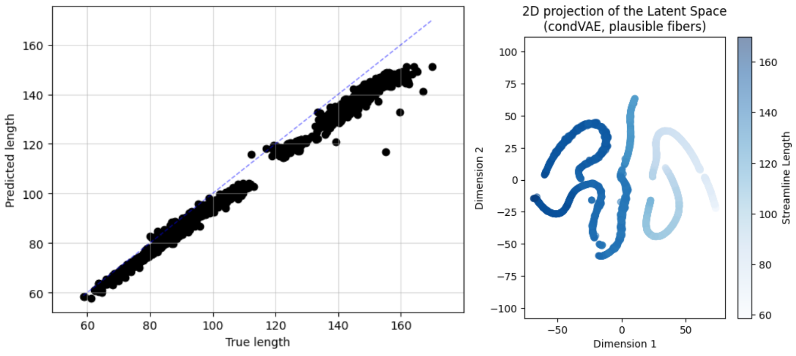
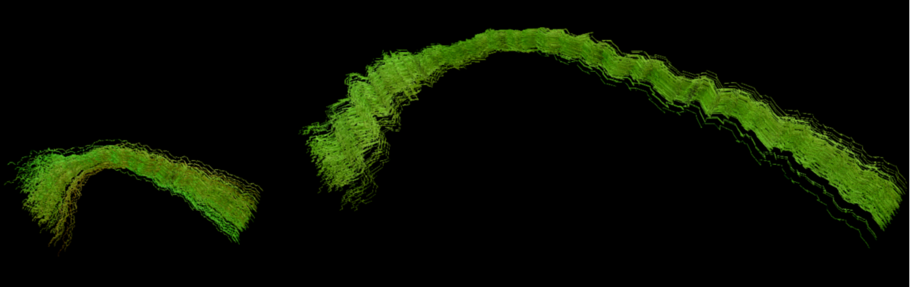

Week 10 into GSoC 2024: Validating the conditional VAE results#
What I did this week#
During this week I focused on validating the results of the conditional VAE (cVAE) that I implemented and experimented with last week.
I further trained the model and got a result with lower label loss, indicating that theoretically the model was capturing the attribute variability (streamline length, in this case) in the training data. Our model was able to “understand” how to pick up the length of the streamlines only from their morphology.
As I mentioned last week, plotting the predicted length against the true length is a good way to validate that the model is indeed doing this correctly. In addition, I plotted the 2-dimensional t-SNE projection of latent space of the model. Knowing that each bundle of the FiberCup dataset has a characteristic and rather constant streamline length, the bundles should be clustered together. See the figure below:
{kind=link}
We can see that yes, the streamlines are grouped into “worm” clusters. Again, there are 7 bundles and 7 worms, and each worm has a constant length, indicating that yes, each bundle is represented by a worm.
Now that we have validated that the model is capturing the attribute variability, we can move on to the next step: generating fibers of specific lengths and checking if they belong to the desired bundle. This is a more intuitive way to validate the model, as we can visually check if the model is generating fibers of the desired length and bundle.
To do this, I generated streamlines spanning the whole length range of the dataset and checked if they belonged to the correct bundle, but the results were not great, because the morphology of the generated streamlines was the same every time, regardless of the indicated length. To check the results better, I generated 300 streamlines of the minimum and maximum lengths found in the training dataset, but the morphology problem persisted. In the figure below you can see that the shorter streamlines (length = 30 units) are morphologically very similar to the ones in the right (length = 300 units).
{kind=link}
In our weekly meeting we discussed this problem and we argued that this could be due to the architecture of the model, which is trying to predict a whole latent vector z from a single number r, the attribute to be conditioned on. Find below a diagram of the model architecture for clarification:

As you see in the diagram, the D3 and D4 blocks of the model are trying to predict the attribute prior represented by the r variable. The label loss is defined as the mean squared error between this r and the true attribute of the data (streamline length in this case), so when D3 and D4 pick up the attribute, the model should be able to generate streamlines of the desired length, which is what actually happens.
However, the generator (yellow block) tries to generate two parameters that are compared to the ones in the green block. This means that when we try to generate a streamline of a specific length by running a specific r value through the generator and then through the decoder, the model is only able to generate a fixed morphology, regardless of the length. This is because the generator is trying to generate a whole latent vector z from a single number r.
After a thorough discussion, we decided to try a non-variational adversarial framework to solve this problem due to the following reasons:
The adversarial nature of the architecture implicitly introduces a prior to the data, so regularization with variational methods is not necessary, so the architecture and the loss computation of the model is simpler.
It is easier to understand, because the original authors of the implemented conditional VAE did not provide a clear derivation of the loss function, so my understanding of its underlying mechanisms is not as deep as I would need to tune its behavior effectively. All in all, the adversarial framework is way more intuitive (at least for me).
It is widespread and there are many resources out there to understand it and implement it. What is more, I quickly found several implementations of adversarial AutoEncoders in TensorFlow with a basic search in Google. I need to read through them and filter which one is the best for me.
For sure there are ways to condition the network on categorical and continuous variables, which would be really convenient to condition both on the bundle and the attribute of the data. Currently it is not possible with the cVAE implementation, as it only conditions on the attribute. This would provide greater control when sampling from the latent space.
What is coming up next week#
Having said this, this week I will focus on learning about adversarial AutoEncoders and implementing one. I will also investigate how to introduce the conditioning on the adversarial framework, and how to condition on both categorical and continuous variables.
For now I found that the continuous attribute can be conditioned like in this work that I mentioned in my GSoC application, and the categorical one like in the original adversarial AutoEncoders paper.
Did I get stuck anywhere#
As I said in a past blog post, research work may not be as straightforward as one would like, but I also would not say that I got stuck. I am just facing some challenges and this is a journey to complete surely-but-steady, because science does not need “fast food”, solutions, but “slow cooked”, well-thought, and well-tested ones.
Thank you for reading, until next week!